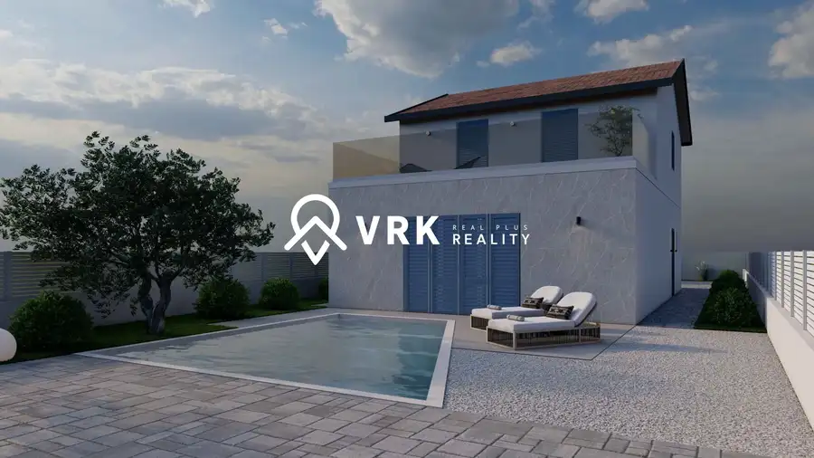
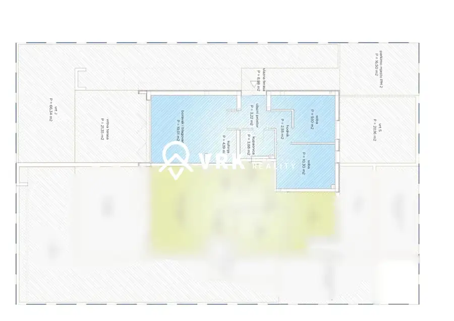
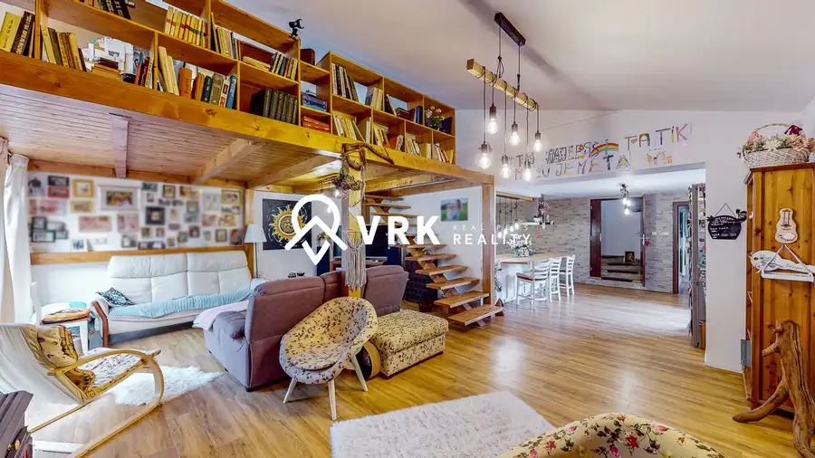
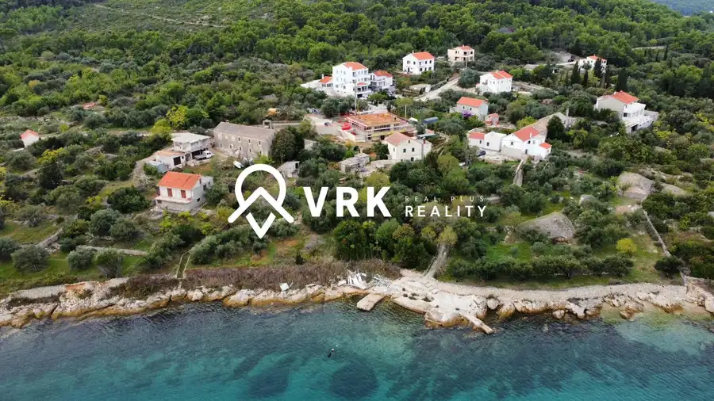

Aktuálna ponuka
9 nehnuteľností, predovšetkým rodinné domy, apartmány, pozemky. Každá má vlastnú stránku s fotkami, popisom a mapou.
Prezrieť ponuku
Kristián VasilevRealitný maklér
Realitný maklér · VRK REAL PLUS s.r.o.
Predaj a prenájom nehnuteľností · Petrčane, Sukošan, Turanj

 Domy a budovy10
1 650 000 €Vila v Sukošane, Chorvátsko
Bibinje, Sukošan
4-izbový170 m²
Ponúkame na predaj priestrannú vilu v Sukošane neďaleko Zadaru v Chorvátsku o rozlohe 170m2, ktorá má dve podlažia. Mimoriadne atraktívnou je…
Domy a budovy8
911 000 €Vila turris, Turanj, Chorvátsko
Turanj
4-izbový120 m²
Termín dostavby : jar 2024 Vila 1A typ D disponuje rozlohou 88,65 m2 a spolu s terasou a vonkajším schodiskom má 120,17 m2. Vila pozostáva z prízemia…
Domy a budovy9
1 588 000 €Bytová jednotka, vila turris K2A typ a, Turanj, Chorvátsko
Turanj, Chorvátsko
5-izbový162 m²
Ponúkame na predaj poschodovú bytovú jednotku VILA TURRIS K2A typ A, v peknej lokalite Turanj, Chorvátsko, neďaleko Zadaru. Turanj je malé turistické…
Domy a budovy10
1 650 000 €Vila v Sukošane, Chorvátsko
Bibinje, Sukošan
4-izbový170 m²
Ponúkame na predaj priestrannú vilu v Sukošane neďaleko Zadaru v Chorvátsku o rozlohe 170m2, ktorá má dve podlažia. Mimoriadne atraktívnou je…
Domy a budovy8
911 000 €Vila turris, Turanj, Chorvátsko
Turanj
4-izbový120 m²
Termín dostavby : jar 2024 Vila 1A typ D disponuje rozlohou 88,65 m2 a spolu s terasou a vonkajším schodiskom má 120,17 m2. Vila pozostáva z prízemia…
Domy a budovy9
1 588 000 €Bytová jednotka, vila turris K2A typ a, Turanj, Chorvátsko
Turanj, Chorvátsko
5-izbový162 m²
Ponúkame na predaj poschodovú bytovú jednotku VILA TURRIS K2A typ A, v peknej lokalite Turanj, Chorvátsko, neďaleko Zadaru. Turanj je malé turistické…

Rodinné domy10 1 000 000 €Novostavba RD, ostrov Vir, Chorvátsko VÍR, Vir 4-izbový128 m² Ponúkame na predaj novostavbu rodinného domu na ostrove Vir v Chorvátsku. Dom je vo fáze výstavby, s predpokladaným termínom dokončenia v priebehu… Rodinné domy9
420 000 €Rodinný dom, Petrčane časť Zadar, chorvátsko
Petrcane, Petrčane
3-izbový168 m²
Rodinný dom pri mori v Petrčane – luxusná nehnuteľnosť len 100 m od pláže! Predstavujeme vám jedinečnú príležitosť vlastniť nádherný rodinný dom v…
Rodinné domy9
420 000 €Rodinný dom, Petrčane časť Zadar, chorvátsko
Petrcane, Petrčane
3-izbový168 m²
Rodinný dom pri mori v Petrčane – luxusná nehnuteľnosť len 100 m od pláže! Predstavujeme vám jedinečnú príležitosť vlastniť nádherný rodinný dom v…

Apartmány10 430 000 €Apartmán, Petrčane, Zadar, chorvátsko Petrcane, Petrčane 3-izbový52 m² Ponúkame na predaj štýlový 3-izbový apartmán v obľúbenej prímorskej lokalite Petrčane, len 15 minút od historického mesta Zadar. Apartmán sa nachádza…
Rodinné domy10 499 000 €Rodinný dom, čermeľ mestská časť Sever, Košice 5-izbový230 m² Tento slnečný pozemok vo výmere 1324 m2 s domom sa nachádzajú v peknej lokalite v blízkosti „ Baránku“ a sú orientované najmä na Juh, Západ, Sever…
Pozemok10 Cena dohodouPozemky na predaj – Lukoran, ostrov Ugljan (Chorvátsko) Ugljan 1017 m² Ponúkame na predaj pozemky v obci Lukoran, ktorá sa nachádza v Zadarskej župe na ostrove Ugljan. Pozemky sú situované v blízkosti mora s krásnym… Apartmány10
290 000 €Zariadený 2-izbový apartmán, Sunnyside - Petrčane, chorvátsko
Petrcane, Petrčane
2-izbový50 m²
Ponúkame na predaj krásny 2-izbový apartmán v prímorskom mestečku Petrčane, iba 10 minút od mesta Zadar. Apartmán sa nachádza v komplexe Sunnyside…
Apartmány10
290 000 €Zariadený 2-izbový apartmán, Sunnyside - Petrčane, chorvátsko
Petrcane, Petrčane
2-izbový50 m²
Ponúkame na predaj krásny 2-izbový apartmán v prímorskom mestečku Petrčane, iba 10 minút od mesta Zadar. Apartmán sa nachádza v komplexe Sunnyside…
Tomuto výberu zatiaľ nezodpovedá žiadna ponuka. Napíšte mi, čo hľadáte.
Volám sa Kristián Vasilev. Som realitný maklér kancelárie VRK REAL PLUS s.r.o. a pôsobím predovšetkým v lokalitách Petrčane, Sukošan, Turanj a Chorvátsko (Košický kraj).
9 nehnuteľností, predovšetkým rodinné domy, apartmány, pozemky. Každá má vlastnú stránku s fotkami, popisom a mapou.
Prezrieť ponukuPetrčane, Sukošan, Turanj, Chorvátsko, Vir a okolie. Ponuku si môžete prezrieť podľa lokality.
Nehnuteľnosti v lokaliteOdhad trhovej ceny, príprava prezentácie, obhliadky, zmluvy a odovzdanie nehnuteľnosti.
Dohodnúť stretnutie
Na čo sa pýtate najčastejšie, skôr než sa stretneme.
Odhad trhovej ceny vychádza z aktuálnych ponúk a predajov v lokalite, nie z cenníkových tabuliek. Podmienky Vám poviem pri prvom telefonáte.
Najprv obhliadka a odhad ceny, potom príprava prezentácie (fotografie, popis, inzercia), obhliadky so záujemcami, rezervačná zmluva, kúpna zmluva, návrh na vklad do katastra a odovzdanie nehnuteľnosti. O každom kroku viete vopred.
Najrýchlejšie cez WhatsApp alebo telefón. Termín stretnutia alebo obhliadky dohodneme podľa Vás.